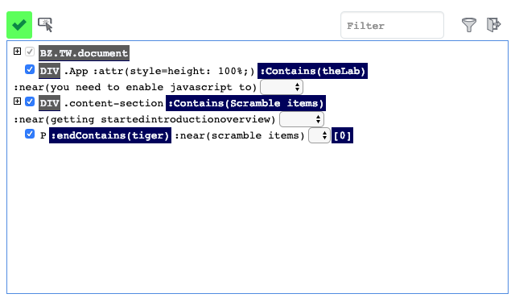

The DOM picker
The Boozang elment path
Boozang uses
The DOM picker window
For this reason, to be able to deliver new features fast without forcing the end user to re-learn, we added an online help function inside the tool. Simply click the question mark in the user interface, and click the functionality and an explanation will appear.

Element path operation
The element path has the following operations. We've expanded the jQuery selction standard to create a more human-readable code to identify elements. The basic pattern is that the lowercase jQuery standard operations, while uppercase operations are case-insensitive. All recorded recorded will generate Uppercase operations. The operations that will be recorded for a test-case is marked by an asterix (*)
-
match (*): Is true if the selected element (case-insensitive) have the exact string alongside other strings
Ex:div:match(lws) Yes:<div>lws ok</div> No:<div>lwsok</div> Yes:<div>lws <span>ok</span></div> No: <div><span>lws</span></div> -
equals (*): Is true if the selected element (case-insensitive) have the exact string
Ex:div:equals(lws) Yes:<div>lws</div> No: <div>lws ok</div> No: <div>lwsok</div> No: <div><span>lws</span></div> - matchAllChildren: Is true if the selected element or any of it's children (case-sensitive) have the exact string alongside other strings
Ex:div:equal(lws) Yes:<div><span>lws</span></div> No: <div>lws ok</div> -
equalsAllChildren (*): Is true if the selected element or any it's children (case-insensitive) matches
Ex: div:Contains(lws) Yes:<div><span>LWs ok</span></div> No: <div>lwsok</div> -
matchAllChildren: Is true if the selected element and all it's children (case-insensitive) matches
Ex: div:Contains(lws) Yes:<div><span>lws ok</span></div> Yes:<div>lwsok</div> No: <div>lwok</div> -
RowCol (*):
Ex: TD:RowCol([value|name]) Yes:<tr><td></td><td>name</td></tr> <tr><td>value</td><td>1234</td></tr> No: <tr><td></td><td>name</td></tr> <tr><td>VALUE</td><td>1234</td></tr> -
rowcol:
Ex: TD:rowcol([value|name]) Yes:<tr><td></td><td>NAME</td></tr> <tr><td>VALUE</td><td>1234</td></tr> No: <tr><td></td><td>name</td></tr> <tr><td>value1</td><td>1234</td></tr> - near (*):
Ex: input:near(name) Yes:<div><label>name: <input/></label></div> Yes:<div><label>name: </label><input/></div> Yes:<tr><td>Name</td><td><input/></td></tr> No: <div>name</div><div><label>value</label><input/></div>